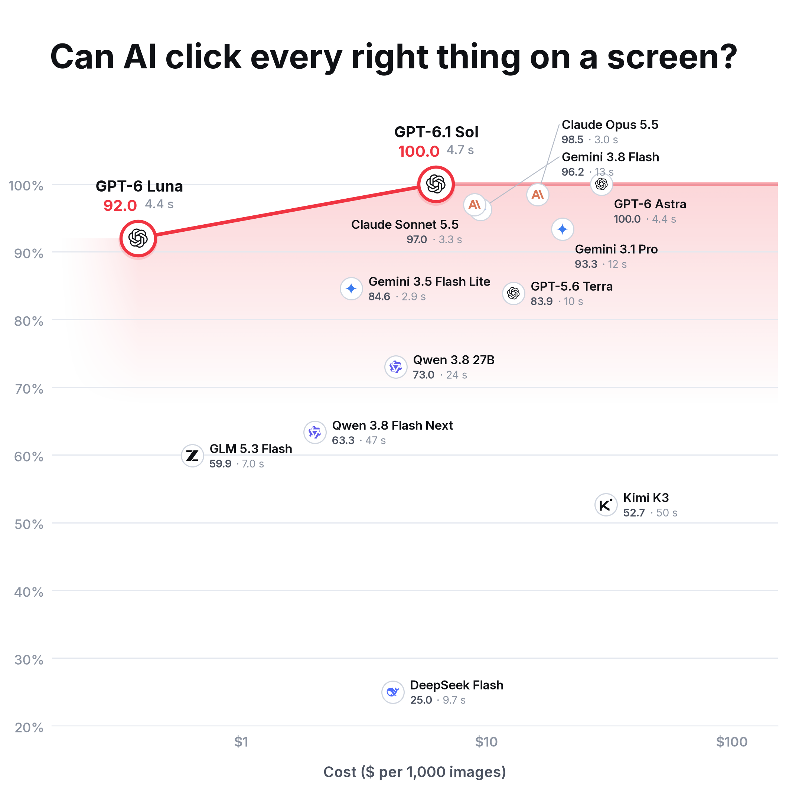

Screen-clicking benchmark, round 2 · the same five screenshots, one instruction each with several right clicks and look-alike decoys (fold every open group but one, open the news stories with more than 1,000 posts, open the folders inside OneDrive, click every D (dirty) label, tick the products with nothing left to sell) · 23 right clicks in all · language models: one plain prompt, never tuned, 3 tries, medium thinking · local models: the same instruction in each model's own prompt pattern, on our GPU · score = F1 of the clicks out of 100 (a right click counts once; a wrong or extra click costs) · seconds = median per question.
How local models are priced: $0.22 per GPU-hour (rented RTX 3090) × time per screenshot, discounted by how much more the GPU does with several copies running at once (measured on the photos).

14 language models, each tested on all five questions.
Source and limits
Drawn by scripts/draw_charts.py --style editorial; regenerate with python3 scripts/plot_screens.py (see its first lines). Tasks and prompt: segbench/screens.py; local models: scripts/run_screens_local.py.
Answer key drawn by hand and checked by Lilly. Scored apart from the photo benchmark. Five screenshots cannot support broad claims. Language-model seconds include the internet and the provider’s queue; local-model seconds do not. Local models were timed on GPU 0 while it also drew the desktop. RF-DETR is not entered: none of its 80 fixed kinds of objects fits a question about a screen.